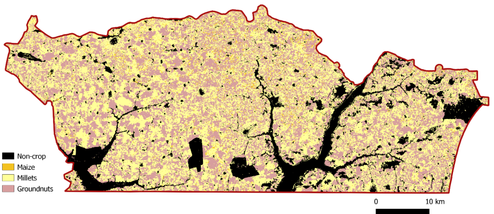

27 Estimating crop statistics for list frame data
27.1 Introduction
This chapter provides guidance for estimating crop statistics when the sample data is organised as a list frame, with one labeled centroid per parcel without direct measurement of parcel areas [1]. In Senegal, the National Statistical Office (NSO) utilizes a list frame based on census data to select a sample of agricultural holdings. Ground data on crop types and agricultural practices are collected from parcels within this sample during the Annual Agricultural Survey (AAS). The observed crop type at each sampled parcel is linked to the pixel containing the centroid and recorded in the database. Consequently, the ground data is not continuous but categorical (crop type) and limited to a single point per sampled parcel, with no information on parcel area.
27.2 National-level estimators
We define the survey vector as \[ \mathbf{y_i} = \begin{pmatrix}y_{i1}\\ .. \\ y_{ik} \\ .. \\y_{iK} \end{pmatrix} \tag{27.1}\]
where \(y_{ik}\) is 1 if the crop \(k\) covers pixel \(i\) and 0 otherwise. The total number of crop categories is \(K\) so that \[ \sum_{k=1}^{K} y_{ik} = 1 \tag{27.2}\]
We focus on high-resolution satellite images where the population size \(N\) is the total number of pixels in the study area \(A = aN\), and each pixel represents a fixed land area \(a\).
The population total of the survey vector is \[ \mathbf{y_N} = \sum_{i=1}^{N} \mathbf{y_i} = \begin{pmatrix} \sum_{i=1}^{N}y_{i1} \\ .. \\ \sum_{i=1}^{N}y_{ik} \\ .. \\ \sum_{i=1}^{N}y_{iK} \end{pmatrix} = \begin{pmatrix} y_{N1} \\ .. \\ y_{Nk} \\ .. \\ y_{NK} \end{pmatrix} \tag{27.3}\]
where \(y_{Nk}\) is the number of pixels covered by crop \(k\). Assuming each pixel is covered by only one crop (or mixed classes are defined), the area covered by crop \(k\) is \(A_k = a*y_{Nk}\) and the total area is \[ A = \sum_{k=1}^{K} A_k \tag{27.4}\] Our goal is to estimate the total \(\mathbf{y_N}\) or the mean value \[ \overline{\mathbf{y}}_N = \frac{1}{N}\sum_{i=1}^{N}\mathbf{y_i} = \begin{pmatrix} \frac{y_{N1}}{N}\\ .. \\ \frac{y_{Nk}}{N} \\ .. \\ \frac{y_NK}{N} \end{pmatrix} \tag{27.5}\]
where \(y_{Nk}/N\) is the proportion of pixels covered by class \(k\).
We assume the survey vector \(\mathbf{y_i}\) follows a multinomial distribution \[ \mathbf{y_i} \sim MN(1,\boldsymbol{\mu_i}) \tag{27.6}\]
where \[ \boldsymbol{\mu_i} = \begin{pmatrix}\mu_{i1}\\ .. \\ \mu_{ik} \\ .. \\\mu_{iK} \end{pmatrix} \tag{27.7}\] and \(\mu_{ik}\) is the probability that unit \(i\) belongs to category \(k\), i.e., the probability of \(y_{ik} = 1\) and \(y_{ik'} = 0, \forall k' \neq k\), subject to the constraint \[ \sum_{k=1}^{K}\mu_{ik} = 1. \tag{27.8}\]
The probabilities \(\mu_{ik}\) are estimated using a sample of pixels \(\{(\mathbf{y_i}, \mathbf{x_i}), i = 1, 2, ..., n\}\) whose total number is \(n\) selected with known inclusion probabilities \(\pi_i\), together with the associated remote sensing data vector which has \(L\) components \[ \mathbf{x_i} = \left(\begin{array}{c} x_{i1}, .., x_{il}, .., x_{iL} \end{array}\right) \tag{27.9}\]
To link \(\mu_{ik}\) with remote sensing data, we use a multinomial logit model \[ \boldsymbol{\mu_{ik}} = \frac{exp(\mathbf{x_i}\boldsymbol{\beta_k})}{\sum_{k=1}^{K}exp(\mathbf{x_i}\boldsymbol{\beta_k})} \tag{27.10}\]
where \[ \boldsymbol{\beta_k} = \begin{pmatrix}\beta_{k1}\\ .. \\ \beta_{kl} \\ .. \\\beta_{kL} \end{pmatrix} \tag{27.11}\]
is the parameter vector for crop \(k\). To estimate the probability \(\mu_{ik}\) that the cover of pixel \(i\) is crop \(k = 1, 2, ..., K\) it is sufficient to acquire estimates of \(\boldsymbol{\beta_k}\) for \(k = 1, 2, ..., K-1\). The probability of category \(K\) is \[ \mu_{iK} = 1 - \sum_{k=1}^{K-1}\mu_{ik} \tag{27.12}\] which can be computed using the estimates \(\mathbf{\hat{B}}_{\pi k}\) for \(k = 1, 2, ..., K-1\).
The design-based estimator (where \(\pi\) indicates that the estimator depends on the inclusion probabilities defined by the NSO in the sampling design)
\[
\mathbf{\hat{B}}_\pi = \begin{pmatrix} \mathbf{\hat{B}}_{\pi 1} \\ .. \\ \mathbf{\hat{B}}_{\pi k} \\ .. \\ \mathbf{\hat{B}}_{\pi K} \end{pmatrix}
\tag{27.13}\] is design-consistent for the maximum likelihood estimator of \(\boldsymbol{\beta}\), expressed as \[
\boldsymbol{\beta} = \begin{pmatrix}\boldsymbol{\beta}_{1}\\ .. \\ \boldsymbol{\beta}_{k} \\ .. \\ \boldsymbol{\beta}_{K} \end{pmatrix}
\tag{27.14}\]
based on the population data \(\{(\mathbf{y_i}, \mathbf{x_i}), i = 1, 2, ..., N\}\), under the assumption that the population behaves like a simple random sample from the multinomial model. Estimation is performed iteratively using weighted likelihood equations based on inclusion probabilities [2] \[ \mathbf{\hat{B}}_{\pi}^{(m+1)} = \mathbf{\hat{B}}_{\pi}^{(m)} + \left[ \sum_{i = 1}^{n}\frac{\mathbf{H}(y_i,\boldsymbol{\beta})}{{\pi_i}} \Bigg|_{\boldsymbol{\beta} = \mathbf{\hat{B}}_{\pi}^{(m)}} \right]_{}^{-1} \sum_{i = 1}^{n}\frac{\mathbf{b}(y_i,\boldsymbol{\beta})}{{\pi_i}}\Bigg|_{\boldsymbol{\beta} = \mathbf{\hat{B}}_{\pi}^{(m)}} \tag{27.15}\] where \[ \mathbf{b}(y_i,\boldsymbol{\beta}) = col_{1 \leq k \leq K-1}row_{1 \leq l \leq L}\Bigl[ (y_{ik} - \mu_{ik})x_{il} \Bigr] \tag{27.16}\] and \[ \mathbf{H}(y_i,\boldsymbol{\beta}) = col_{1 \leq k \leq K-1}row_{1 \leq k' \leq K -1 }\Bigl[(\delta_{kk'}\mu_{ik} - \mu_{ik}\mu_{ik'})\otimes \mathbf{x}_{i}^\top\mathbf{x}_{i}\Bigr] \tag{27.17}\] with \(\delta_{kk'} = 1\) if \(k = k'\) and \(\delta_{kk'} = 0\) otherwise.
A design-consistent estimator of the total number of pixels covered by each crop \[ \mathbf{y}_{N} = \begin{pmatrix}y_{N1}\\ .. \\ y_{Nk} \\ .. \\y_{NK} \end{pmatrix} \tag{27.18}\] is given by \[ \mathbf{\hat{y}}_{N} = \sum_{i=1}^{N}\boldsymbol{\hat{\mu}_i} + \frac{N}{\hat{N}_p} \sum_{i=1}^{n}\frac{\mathbf{y}_i - \boldsymbol{\hat{\mu}_i}}{\pi_i} \tag{27.19}\] In Equation 27.19, \(\boldsymbol{\hat{\mu_i}}\) is a column vector, expressed as \[ \boldsymbol{\hat{\mu}}_i = \begin{pmatrix} \hat{\mu}_{i1}\\ .. \\ \hat{\mu}_{ik} \\ .. \\ \hat{\mu}_{iK-1} \end{pmatrix} \tag{27.20}\] For classes \(k=1,..., K-1\), each of the terms of \(\boldsymbol{\hat{\mu_i}}\) in Equation 27.19 is estimated by \[ \hat{\mu}_{ik} = \frac{exp(\mathbf{x}_i\mathbf{\hat{B}}_{\pi k})}{ 1 + exp(\mathbf{x}_i\mathbf{\hat{B}}_{\pi k})}, \quad k = 1,2, ..., K-1 \tag{27.21}\] For class \(k=K\), the estimator of \(\boldsymbol{\hat{\mu_i}}\) is \[ \hat{\mu}_{iK} = 1 - \sum_{k=1}^{K-1}\hat{\mu}_{ik}. \tag{27.22}\] In Equation 27.19, the normalization factor \(\hat{N}_p\) is given by \[ \hat{N}_p = \sum_{i=1}^{n}\frac{1}{\pi_i}. \tag{27.23}\] Based on the above, we can compute the estimator of the total number of pixels covered by crop \(k \le K-1\), given by \[ \hat{y}_{Nk} = \sum_{i=1}^{N}\hat{\mu}_{ki} + \frac{N}{\hat{N}_p} \sum_{i=1}^{n}\frac{y_{ki} - \hat{\mu}_{ki}}{\pi_i}, \quad k = 1,2, ..., K-1 \tag{27.24}\]
and for crop \(K\) the estimator is \[ \hat{y}_{NK} = N - \sum_{k=1}^{K-1} \hat{y}_{Nk}. \tag{27.25}\]
The sampling covariance matrix of \(\mathbf{\hat{y}}_{N}\) is approximated by \[ \mathbf{V\hat{y}}_N \approx N^2\mathbf{V}\frac{1}{\hat{N}_p}\sum_{i=1}^{n}\frac{\mathbf{y}_i - \boldsymbol{\mu}_i}{\pi_i} \tag{27.26}\] which can also be expressed as \[ \mathbf{V\hat{y}}_N \approx col_{1 \leq k \leq K-1}row_{1 \leq k' \leq K -1 }\Bigl(N^2Cov(\hat{y}_{rk}, \hat{y}_{rk'}) \Bigr) \tag{27.27}\] To compute the covariance matrix for elements \(\hat{y}_{rk}\) in Equation 27.27, we consider that \[ \hat{y}_{rk} = \frac{1}{\hat{N}_p}\sum_{i=1}^{n}\frac{y_{ki} - \mu_{ki}}{\pi_i}. \tag{27.28}\] Each estimator \(\hat{y}_{rk}\) is a function of the estimators of the total number of sampling units of category \(k\), given by \[ \hat{N}_{pk} = \sum_{i=1}^{n}\frac{y_{ki}}{\pi_i}, \quad k = 1,2, ..., K \tag{27.29}\] noting that \[ \hat{N}_p = \sum_{k=1}^{K}\hat{N}_{pk}. \tag{27.30}\] The estimators \(\hat{y}_{rk}\) also depend on the total residuals of class \(k\), estimated by the second term of Equation 27.28 \[ \hat{r}_{kN} = \sum_{i=1}^{n}\frac{y_{ki} - \mu_{ki}}{\pi_i} \tag{27.31}\] for each class \(k\).
The diagonal elements of the variance matrix \(\mathbf{V\hat{y}}_N\) provide the sampling variance \(V\hat{y}_{Nk}\) for each crop class \(k = 1,2,..., K-1\). Let the row vector \(\mathbf{\hat{G}}_k\) be such that its \(K+1\) components are the estimators on which \(\hat{y}_{rk}\) depends, and be given by \[ \mathbf{\hat{G}}_k = \Bigl[ \hat{r}_{kN}, \hat{N}_{p1}, \hat{N}_{p2}, ..., \hat{N}_{pK} \Bigr]. \tag{27.32}\]
Let \(g_1 = \hat{r}_{KN}, g_2 = \hat{N}_{p1}, g_3 = \hat{N}_{p2}, ..., g_{N+1} = \hat{N}_{pK}\). The sampling variance \(\hat{y}_{Nk}\) is approximated by \[ V\hat{y}_{Nk} \approx row_{1 \leq j \leq K+1} \biggl(\frac{\partial\hat{y}_{rk}}{\partial{g_j}}\biggr)\enspace \mathbf{V\hat{G}}_k \enspace col_{1 \leq j \leq K+1}\biggl(\frac{\partial\hat{y}_{rk}}{\partial{g_j}}\biggr) \tag{27.33}\] where \[ \mathbf{V\hat{G}}_k = col_{1 \leq j \leq K+1} row_{1 \leq j' \leq K+1} \biggl(Cov\bigl(g_j,g_{j'} \bigr) \biggr) \tag{27.34}\]
is the design-based covariance matrix of \(\mathbf{\hat{G}}_k\). The sampling covariance matrix \(\mathbf{\hat{y}}_N\) is estimated replacing \(\boldsymbol{\mu}_i\) by \(\boldsymbol{\hat{\mu}}_i\) in \(V\hat{y}_{N}\) [2].
27.3 Crop type maps
To generate the crop-type map for the Nioro region, a random forest classifier was applied (see chapter 17 for full details) identifying four primary crop classes: maize, millet, groundnut, and other crops. Pixels not associated with these four classes were classified into a non-agricultural land-use category and excluded from crop-specific analysis (Figure 27.1).
.
The map data are encoded according to the Earth Observation (EO) crop type assigned to each pixel: we use the row vector \(\mathbf{x}_i = (1, 0, 0, 0)\) for any pixel \(i\) in the EO class maize, \(\mathbf{x}_i = (0, 1, 0, 0)\) for any pixel in the EO class millet, \(\mathbf{x}_i = (0, 0, 1, 0)\) for any pixel in the EO class groundnut, and \(\mathbf{x}_i = (0, 0, 0, 1)\) for any pixel in the EO class other crops.
27.4 Model parameter estimates
This section focuses on the two main crops observed in the field sample: millet and groundnut. All other crops (primarily maize) are grouped into the third category labeled others. The estimated probability for this residual category is computed as one minus the sum of the probabilities for millet and groundnut. Table 1 below presents the estimated coefficients for each crop type, indicating the strength and direction of association between EO classifications and ground-truth crop types (Annex 1 contains the R scripts to compute these estimates using the database provided in Annex 6a).
| Crop | EO crop type map | |||
|---|---|---|---|---|
| Maize | Millet | Groundnut | Other crops | |
| Millet | -0.010655 | 1.47958334 | 0.88931346 | 8.76504093 |
| Groundnut | -0.659204 | -0.59871700 | 2.89873948 | 1.21898514 |
These coefficients reflect how strongly each EO classification predicts the presence of a given crop type in the field. The EO classification “millet” has a strong positive association (1.4796) with the ground-truth millet class. The EO classification “groundnut” is highly predictive ( 2.8987) of the ground-truth groundnut class. The “other crops” EO class shows a strong association with both millet (8.76504093) and groundnut (1.21898514), suggesting potential overlap or classification uncertainty.
27.5 Crop acreage estimates
Crop acreage estimates for millet and groundnut, derived from the integration of ground and RS data, are shown in Table 2 (Annex 2 contains the R scripts to compute these estimates, using the database provided in Annex 6a, and Annex 3 contains the R Scripts to compute the standard errors, coefficients of variation, and confidence intervals, using the database provided in Annex 6b).
| Crop type | Acreage (Hectare) | Uncertainty | ||||
|---|---|---|---|---|---|---|
| Standard error | Coefficient of variation (%) | Limits of 95% confidence interval | ||||
| Lower | Upper | Amplitude | ||||
| Millet | 89215 | 3661.103 | 4.11 | 81978.88 | 96330.4 | 14351.52 |
| Groundnut | 78815 | 2923.94 | 3.71 | 73089.15 | 84550.98 | 11461.82 |
We compare the results of our design-based approach (shown in Table 27.2) with estimates directly based on the crop-type map. The comparison is necessarily limited to the crop acreage estimates because the usual algorithms used for crop-type map generation do not provide measures of uncertainty comparable to those of Table 27.2.
Both the number of pixels in EO crop type millet (9470572, i.e., 94705.72 ha, as a pixel represents 100 \(m^2\)) and in EO crop type groundnut (8076448, i.e., 80764.48 ha) are larger than the design-based number estimates: 8921492 (89214.92 ha) for millet and 7881468 (78814.68 ha) for groundnut. For millet, the difference was 5490.8 ha (6.2%) and for groundnut 1949.8 ha (2.5%). For the former, the difference is greater than the design-based standard error (3661.10 ha) and the coefficient of variation (4.11%). For the latter, the difference is smaller than the design-based standard error (2923.94 ha) and the coefficient of variation (3.71%). These differences are not statistically significant, since the estimates directly based on the EO crop-type classes are within the design-based confidence limits, namely, [81978.88, 96330.4] ha for millet and [73089.15, 84550.98] ha for groundnut.
However, the comparison must focus not on the results, which are always uncertain, but on the methods. The methods make the major difference; whereas the design-based estimators are in the mainstream of official statistics, the estimators based directly on crop-type maps are not. The proposed approach provides design-consistent estimates together with the usual measures of uncertainty (sampling error, coefficient of variation, and confidence intervals). The two main objections to estimators based directly on the crop-type map are that (i) they are not design-consistent and (ii) the usual uncertainty measures are not available.
27.6 Crop type map relative efficiency
When comparing a set of sampling strategies developed for estimating the same characteristic in a given population, cost efficiency is a key criterion. Let \(C_{GD}\) be the cost and \(V_{GD}\) the sampling error of the current sampling strategy using only ground data, and let \(C_{GD+RS}\) and \(V_{GD+RS}\) be the cost and sampling error, respectively, of the strategy integrating ground and remote sensing (RS) data. The cost efficiency is \(C_{GD}V_{GD}\) for the former and \(C_{GD+RS}V_{GD+RS}\) for the latter.
Although Sentinel images and processing software are freely provided by ESA, NSOs still incur costs such as expert time and cloud computing services for data storage and analysis. Additionally, replacing parcel centroids with georeferenced polygons introduces further operational costs. Given the difficulty of estimating these additional costs, we assume in the following that \(C_{GD+RS} \approx C_{GD}\) , simplifying the comparison to a focus on criterion relative efficiency.
The sampling variance of the \(y_{Nk}\) estimator based on ground data alone is \[ V_{GD} = N^2V\frac{1}{\hat{N}_p}\sum_{i=1}^{n}\frac{y_{ki}}{\pi_i} \tag{27.35}\]
and that based on its integration with RS data is \[ V_{GD+RS} = N^2V\frac{1}{\hat{N}_p}\sum_{i=1}^{n}\frac{y_{ki} - \mu_{ki}}{\pi_i}. \tag{27.36}\]
The relative efficiency of RS data for estimating the total number of pixels covered by crop \(k\) is \[ RE_{RSk} = V\frac{1}{\hat{N}_p}\sum_{i=1}^{n}\frac{y_{ki}}{\pi_i}\biggl( V\frac{1}{\hat{N}_p}\sum_{i=1}^{n}\frac{y_{ki} - \mu_{ki}}{\pi_i}\biggr)^{-1}. \tag{27.37}\]
We evaluate the RS data efficiency \(RE_{RSk}\) for the acreage estimation of millet and groundnut. Results are in Table 27.3 (Annex 3 contains the R scripts to generate these results using the database provided in Annex 6b).
| Crop type | Std errors of proportion estimators | Relative efficiency of RS data | |
|---|---|---|---|
| Ground data | Ground & RS data | ||
| Millet | 3.37 | 1.90 | 3.13 |
| Groundnut | 3.34 | 1.52 | 4.80 |
The effect of integrating RS data in the ground sample data was a reduction in the sampling error of millet and groundnut and, as a result, in the confidence interval of these two crops, without loss of design-based consistency. In other words, using RS data, the cost of estimating millet and groundnut acreage could be reduced to less than a third of the current cost, without loss of accuracy.
27.7 District-level estimates
The total of survey vector in the domain \(R\) of size \(N_R\) pixels is \[ \mathbf{y}_{N_{R}} = \sum_{i=1}^{N_R}\mathbf{y}_i = col_{1 \leq k \leq K}\biggl( \sum_{i=1}^{N_R} y_{ik}\ \biggr) = \begin{pmatrix}y_{N_R1}\\ .. \\ y_{N_Rk} \\ .. \\y_{N_RK} \end{pmatrix} \tag{27.38}\]
In Equation 27.38, \(y_{N_Rk}\) is the number of pixels in \(R\) covered by crop \(k\). To estimate \(\mathbf{y}_{N_{R}}\), we use the sample \(s\) of size \(n\) selected from the population with inclusion probabilities \({\pi_i, i = 1, 2,..., N}\) and the estimator \[ \mathbf{\hat{y}}_{N_{R}} = \sum_{i=1}^{N_R}\boldsymbol{\hat{\mu}}_i + \frac{N_R}{\hat{N}_{R_p}}\sum_{i=1}^{n_R}\frac{\mathbf{\hat{y}}_i - \boldsymbol{\hat{\mu}}_i}{\pi_i} \tag{27.39}\]
The parameter \(n_R\) is the number of units in the sample belonging to the study domain, given by \[ n_R = \sum_{i=1}^{n}I_i \tag{27.40}\] where the indicator variable \(I_i\) is 1 if the pixel belongs to the region \(R\) and 0 otherwise.
and \[ \hat{N}_{Rp} = \sum_{i=1}^{n_R}\frac{I_i}{\pi_i}. \tag{27.41}\]
The sampling covariance of \(\mathbf{\hat{y}}_{N_R}\) is given approximately by \[ \mathbf{V\hat{y}}_{N_R} \approx N_R^2\mathbf{V}\frac{1}{\hat{N}_{R_p}}\sum_{i=1}^{n_R}\frac{\mathbf{y}_i - \boldsymbol{\mu}_i}{\pi_i}. \tag{27.42}\] also expressed as
\[ \mathbf{V\hat{y}}_{N_R} = col_{1 \leq k \leq K-1}\enspace row_{1 \leq k' \leq K-1} \enspace \Bigl( N_R^2 Cov(\hat{y}_{Rrk}, \hat{y}_{Rrk'}) \Bigr) \]
Let \[ \hat{y}_{Rrk} = \frac{1}{\hat{N}_{Rp}}\sum_{i=1}^{n_R}\frac{y_{ki} - \mu_{ki}}{\pi_i} \tag{27.43}\]
and \[ \mathbf{\hat{G}}_{Rk} = \Bigl[ \hat{r}_{kN_R}\enspace \hat{N}_{N_Rp1} \enspace \hat{N}_{N_Rp2} \enspace ... \enspace \hat{N}_{N_RpK} \Bigr]. \tag{27.44}\] Let $$
g_{R1} = {kN_R}, g{R2} = {N_Rp1}, , …, g{RK+1} = {N_RpK} \[{#eq-gest} The sampling variance of $\hat{y}_{N_Rk}$ is given approximately by \] V{N_Rk} row_{1 j K+1} ( ){Rk} col{1 j K+1}() $${#eq-ysamplvarrk}
where \[ \mathbf{V\hat{G}}_{Rk} = col_{1 \leq j \leq K+1} row_{1 \leq j' \leq K+1} \biggl(Cov\bigl(g_{Rj},g_{Rj'} \bigr) \biggr) \tag{27.45}\] The sampling covariance matrix \(\mathbf{\hat{y}}_{N_R}\) is estimated replacing \(\boldsymbol{\mu}_i\) by \(\boldsymbol{\hat{\mu}}_i\)in Equation 27.42.
To illustrate the application of point sampling and multinomial logit models at sub-national scale, crop acreage estimates were generated for three districts (Arrondissements) within the Nioro region: Medina Sabakh, Paoskoto, and Wack Ngouna. The estimates are in Table 27.4 (Annex 4 contains the R scripts to compute these estimates using the database provided in Annex 6a, and Annex 5 contains the R Scripts to compute the standard errors and coefficients of variation, using the database provided in Annex 6c).
| Arrondissement | Millet | Groundnut | ||
|---|---|---|---|---|
| Acreage (has.) | Error (CV%) | Acreage (has.) | Error (CV%) | |
| Medina Sabakh | 20067.21 | 8.6 | 19765.36 | 7.3 |
| Paoskoto | 38316.02 | 5.3 | 35018.23 | 4.0 |
| Wack Ngouna | 30831.77 | 11.9 | 24030.71 | 10.7 |
| Total Nioro | 89215,00 | 4.11 | 78815,00 | 3.71 |
The estimated accuracy at district (arrondissement) level is, as expected, lower than at the national level. However, the sampling error is within the standard limit (coefficient of variation \(\lt\) 20%) for labeling as official statistics.
The differences between the number of pixels in the EO crop type millet and the design-based estimate of the number of pixels covered by millet are smaller than the sampling error in Medina Sabakh (0.7%) and Paoskoto (4.1%), and larger than the design-based estimate in Wack Ngouna (12.4%). The differences between the number of pixels in the EO crop type groundnut and the design-based estimate of the number of pixels covered by groundnut are smaller than sampling error in the three districts: Medina Sabakh (3.4%), Paoskoto (2.5%), and Wack Ngouna (1.2%).
27.8 Concluding remarks
We have shown how to integrate RS and categorical ground data collected in complex samples, selected from non-georeferenced list frames, to produce agricultural statistics, along with measures of accuracy that take into account any source of uncertainty, including classification errors. We developed and tested prototypes for this integration at both national and district levels in Senegal. These prototypes are based on the design of a probabilistic scheme to select the sample from which to collect the ground data and rely on multinomial logit models to incorporate RS-derived crop-type information. We show how to estimate the model parameters, and how to use RS data to compute the required statistics, as well as their accuracy measures. The resulting statistics are design-consistent and robust, meaning they depend on the sampling design rather than on the model assumptions.
We also evaluated the efficiency gains from integrating RS data into the current statistical workflow, and we have found it to be high: using RS data, the current sample size at the level of large areas could be reduced between one third and one fifth, without loss of neither robustness nor accuracy.
References
[1]
L. Ambrosio, L. Iglesias, C. Marín, and N. Deffense, “Integration of remote sensing data into national statistical office sampling designs for agriculture,” Statistical Journal of the IAOS, vol. 39, no. 2, pp. 473–489, 2023, doi: 10.3233/SJI-220116.
[2]
W. A. Fuller, Sampling statistics. John Wiley & Sons, 2011.